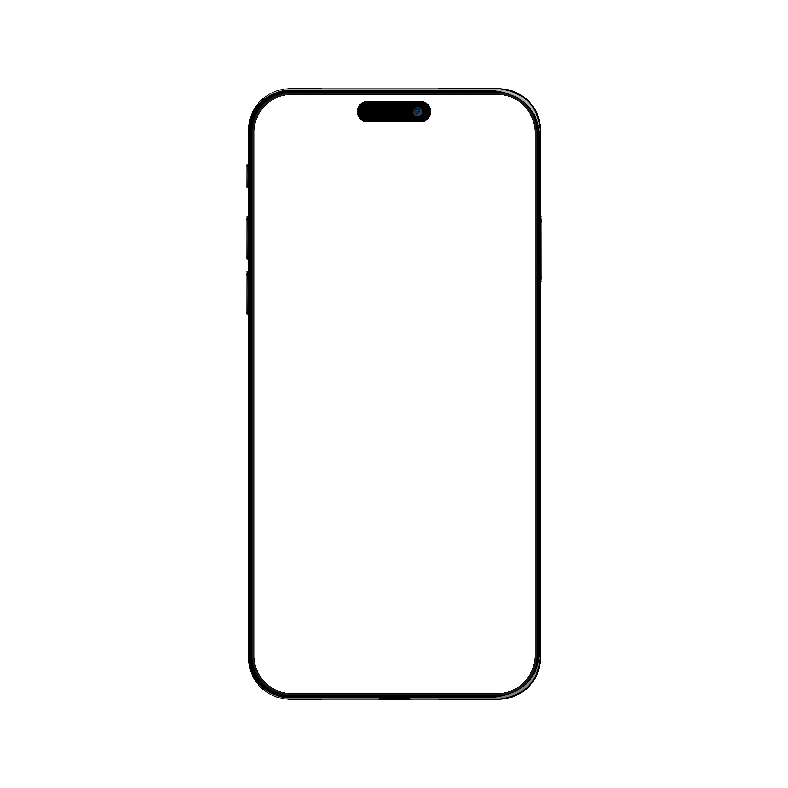

I used the Emento app ahead of a recent knee procedure. For someone who had navigated previous hospital visits with stacks of paper, having tasks, dates, and reminders in one place was a genuine shift.
I'm a strategic designer who has spent five years in the Hospital at Home space. Patient experience sits at the centre of that work — and my time with Emento sparked two ideas I wanted to explore. I used the opportunity to experiment with Claude Code and sharpen my thinking about what AI makes possible in healthcare design.
These are observations from one patient's journey. If they resonate, I'd love to connect.
The task list was the heart of my Emento experience. I found myself approaching it less as a series of things to complete, and more as a journey — a visible shape of time leading up to, and then away from, my procedure.
What if that metaphor was pushed further? Assuming the system knows how many days until a scheduled appointment, the task list could become a genuinely personalised journey:

During my experience, nurses still handed me pieces of paper. Often critical ones. An intake nurse gave me a note with fasting times — different from what was in the app. After my procedure, a nurse gave me a handwritten medication schedule. It was the single most useful piece of information I received in recovery. But it wasn't in Emento.
Rather than change how nurses work today, what if the app could evolve around the paper?
These ideas are built into a working prototype. It runs on mobile and takes a couple of minutes to explore — try entering different days until a procedure to see the journey adapt.
Open prototype ↗